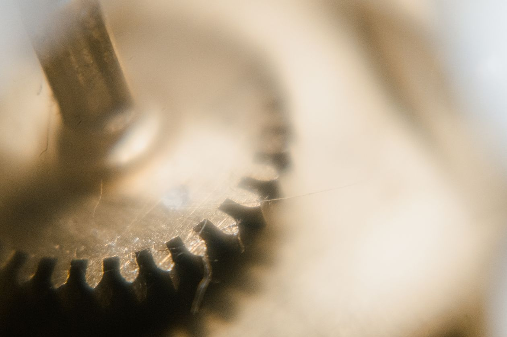

Case File 01 · Commission & exhibition · 2024
Madame Cog, the Writing Automaton
The brief
A science museum wanted a centrepiece for a gallery on mechanical thinking: a machine that writes, in front of visitors, all day, six days a week — not a video of a machine that writes, and not a printer in a frock. It had to survive being watched by engineers.
The decisions
She writes with a real pen because ink is the proof. Twenty-four phrases sit on a changeable cam stack — curators can read every word she can say before she says it, and two phrases were cut at their request. The gear train is 214 gears; the run was set by the museum's day, not by vanity: twin mainsprings give 20 minutes per wind, and two operators wind her in rotation so she never stops mid-sentence in front of a school group. The great wheel over her desk — the one visitors photograph — is driven by nothing and drives nothing. It is labelled as decoration on her own plate, because the honest machine is interesting enough without lying about which wheel thinks.
The outcome
Installed March 2024; on loan to the museum until March 2027 under the register on the home page. She has written an estimated 41,000 cards. Two springs replaced under the maintenance terms, both during closed hours, both logged. The museum's own engineers now wind her on open days — the highest compliment this workshop accepts.
Madame Cog · 2024 · Brass, steel, walnut, real ink · Class C — twin mainsprings, 20 min per wind, 2 operators · Status: on exhibition loan.

Machine plate
- Gears in the working train: 214
- Decorative gears: 37 — the cogitation wheel, labelled on the plate
- Phrases on the cam stack: 24 (2 cut by the client, on request, in writing)
- Run per wind: 20 minutes · Winds in a museum day: 18
- Ink: iron-gall, one bottle a month, client's shelf